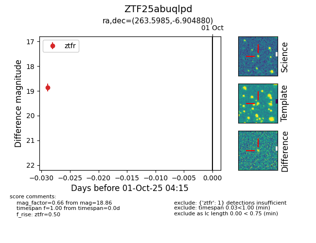

FINK: ZTF25abuqlpd
Lasair: ZTF25abuqlpd
ALeRCE: ZTF25abuqlpd
ZTF25abuqlpd (ztf,fink)
equatorial (ra, dec) = (263.5985,-6.90488)
galactic (l, b) = (17.6355,+13.68796)

last ztfr=18.86
1 ztfr detections